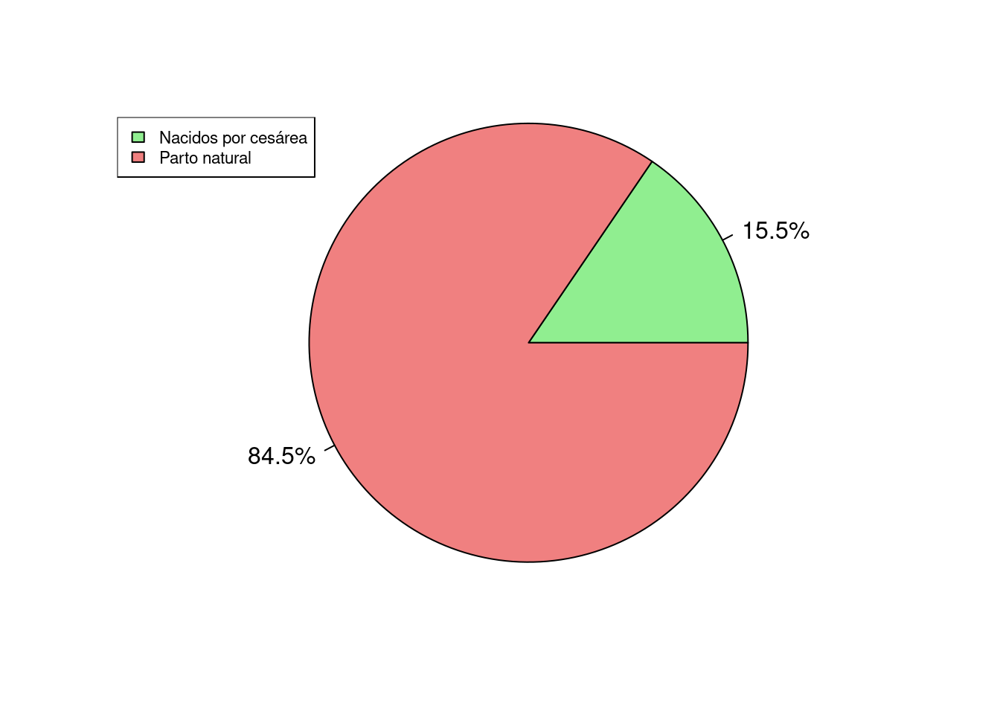
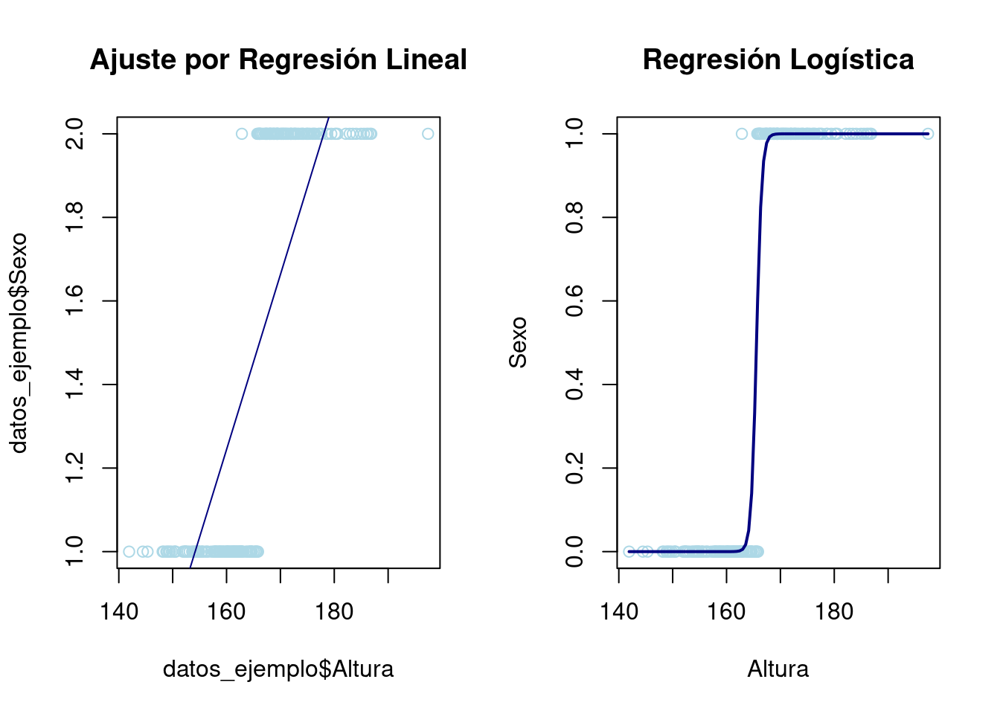
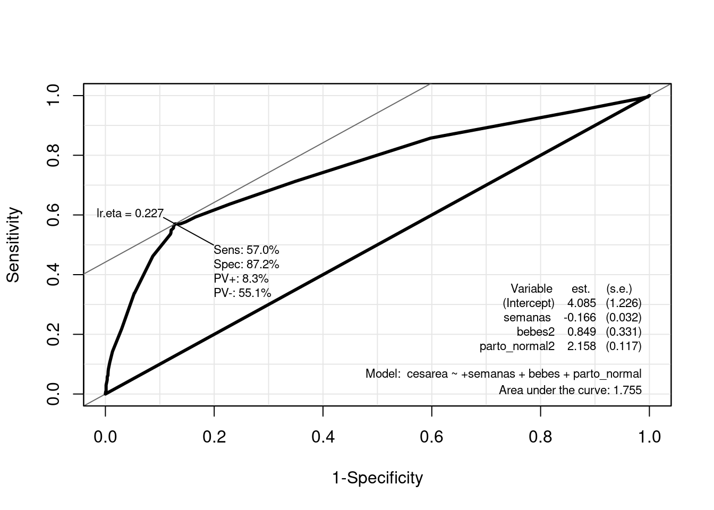

library(dplyr) # Para tratamiento de dataframes
library(ggplot2) # Nice plots
library(readxl) # Para leer los excels
library(caret) # para la confusion matrix
library(Epi) # para la ROC curveRegresión Logística: Partos
Introducción
En este cuaderno se va a explicar los fundamentos de la Regresión Logística, como detectar cuando nos encontramos ante un problema que se debe abordar mediante este tipo de Regresión. Se verán los fundamentos teóricos que lo sustentan y las técnicas a llevar a cabo para analizar los datos.
dataset
En este cuaderno vamos a analizar la presencia de una cesárea en un parto a partir de los microdatos de la Estadística de nacimientos. Movimiento natural de la población. Concretamente, se han tomado los datos relativos a partos, 2022 y los relativos a la Comunidad Autónoma de Navarra.. Dicho análisis nos sirve como excusa para tratar de mostrar en qué consiste una regresión logística y cómo llevarla a cabo en R.
Ver fichero Dataset_cleaning para ver cómo se han tratado dichos microdatos hasta obtener un conjunto de datos adecuado para la regresión logística, y que tomaremos aquí como punto de partida. El fichero de datos procesado se puede encontrar en Partos.xlsx
Concretamente tenemos las siguientes variables:
- bebes: Número de bebés nacidos en el parto. (categórica)
- semanas: Número de semanas del embarazo.
- edad_madre: Edad de la madre en años cumplidos.
- cesárea: Si se ha llevado a cabo una cesárea en el parto (Categórica. 0=no, 1=si).
- parto_normal: Si el parto transcurrió con normalidad. (Categórica. 1=normal, 2=complicaciones)
Descripción del trabajo a realizar
(Esto irá en la web de explica) Se pretende hacer una regresión logística que clasifique la variable respuesta cesárea - si en el parto se efectuó una cesárea - en función de varios predictores, tanto continuos (semanas, edad_madre) como categóricos (bebes).
- Hacer un análisis exploratorio.
- IMPORTANTE: Convertir a factor las variables que lo sean.
- Plantear diversos modelos según variables incluidas.
- Compararlos con ANOVA y ROC CURVE.
- Para el modelo seleccionado, explicar los coeficientes, odds ratio,…
Análisis Exploratorio (EDA)
EDA viene del Inglés Exploratory Data Analysis y son los pasos relativos en los que se exploran las variables para tener una idea de que forma toma el dataset.
Cargar Librerías
Lo primero de todo vamos a cargar las librerías necesarias para ejecutar el resto del código del trabajo:
Lectura de datos
Ahora cargamos los datos del excel correspondientes a la pestaña “Datos” y vemos si hay algún NA o algún valor igual a 0 en nuestro dataset. Vemos que no han ningún NA (missing value) en el dataset luego no será necesario realizar ninguna técnica para imputar los missing values o borrar observaciones.
datos1 <- read_excel("../../../files/partos.xlsx", sheet = "Datos")
Clasificación: Regresión Logística
Introducción
Un análisis de regresión logística es una técnica estadística multivariante que tiene como finalidad pronosticar o explicar los valores de una variable dependiente categórica a partir de una (regresión logística simple) o más (regresión logística múltiple) variables independientes categóricas o continuas. Dichas variables independientes reciben el nombre de covariables. Asimismo, a diferencia de lo que suele hacerse cuando tenemos una variable dependiente continua, cuando ésta es categórica, no interesa describir o pronosticar los valores concretos de dicha variable, sino la probabilidad de pertenecer a cada una de las categorías de la misma.
Aunque matemáticamente se pueda ajustar un modelo de regresión lineal clásico a la relación entre una variable dependiente categórica y una o varias covariables, cuando la variable dependiente es dicotómica (regresión logística binaria, caso más sencillo de regresión logística) no es apropiado utilizar un modelo de regresión lineal porque una variable dicotómica no se ajusta a una distribución normal, sino a una binomial. Ignorar esta cuestión podría llevar a obtener probabilidades imposibles: menores que cero o mayores que uno.
Para evitar este problema, es preferible utilizar funciones que realicen predicciones comprendidas entre un máximo y un mínimo. Una de estas funciones - posiblemente la más empleada - es la curva logística o función sigmoide:
\[\begin{align} \eta=\log \left(\frac{p}{1-p}\right)= \beta_0 + \beta_1 X_1 + \beta_2 X_2 + \ldots , \quad \text{with } \quad p=P(Y=1) \end{align}\]
Es decir, estamos estimando con una regresión lineal el valor de \(\eta\), que sí es una v.a. continua - a diferencia de Y que es binaria-.
Esto es, \(p=\frac{e^\eta}{1+e^\eta}=\frac{1}{1+e^{-\eta}}\). De esta forma, para valores positivos muy grandes de \(\eta\) llamado odds, \(e^{-\eta}\) es aproximadamente cero, por lo que el valor de la función es 1; mientras que para valores negativos muy grandes de \(\eta\), \(e^{-\eta}\) tiende a infinito, haciendo que el valor de la función sea 0.
A continuación, para simplificar un poco las cosas, consideremos el modelo de regresión logística más sencillo: regresión logística binaria simple (una sola covariable):
\[ \begin{align} P(Y=1)=\frac{1}{1+e^{-(\beta_0 + \beta_1X_1 + ϵ)}} \end{align} \]
La interpretación de esta función es muy similar a la de una regresión lineal: el coeficiente \(\beta_0\) representa la posición de la curva sobre el eje horizontal o de abscisas (más hacia la izquierda o más hacia la derecha); mientras que \(\beta_1\) representa la pendiente de la curva, es decir, cuán inclinada está en su parte central (cuanto más inclinada, mayor capacidad de discriminar entre los dos valores de la variable dependiente).
Si estuviésemos ante una regresión logística múltiple, cada variable independiente recibiría una ponderación proporcional a su capacidad para predecir Y.
Ejemplo sencillo Vamos a mostrar como una variable binaria no tiene sentido predecirla con una Regresión Lineal sino Logística.
# Generación de datos para el ejemplo
set.seed(123)
n <- 200
Altura <- rnorm(n, mean = 165, sd = 10)
# Crear una variable binaria 'Sexo' en función de Altura
Sexo <- as.factor(ifelse(Altura + rnorm(n) > 165, 1, 0))
datos_ejemplo <- data.frame(Altura, Sexo)
# Regresión lineal
modelo_lineal <- lm(Sexo ~ Altura, data = datos_ejemplo)
# Regresión logística
modelo_logistico <- glm(Sexo ~ Altura, data = datos_ejemplo, family = binomial)
# Regresión Lineal
par(mfrow = c(1, 2))
plot(datos_ejemplo$Altura, datos_ejemplo$Sexo, col = "lightblue", main = "Ajuste por Regresión Lineal")
abline(modelo_lineal, col = "navy")
# Regresión Logística
plot(datos_ejemplo$Altura, as.numeric(datos_ejemplo$Sexo) - 1, col = "lightblue", main = "Regresión Logística", xlab = "Altura", ylab = "Sexo")
curve(predict(modelo_logistico, data.frame(Altura = x), type = "response"), add = TRUE, col = "navy", lwd = 2)
En este ejemplo, se muestra cómo un ajuste por regresión lineal no se adapta bien a datos binarios, produciendo predicciones que pueden ser mayores que 1 o menores que 0. En cambio, la regresión logística produce una curva en forma de S que se adapta mejor a los datos, con predicciones que están siempre entre 0 y 1. Esto demuestra que para problemas de clasificación binaria, la regresión logística es una mejor opción que la regresión lineal.
Bondad de Ajuste e Interpretación Modelo
Interpretación Modelo
Recordar que el modelo tomaba la forma \[\eta=\log \left(\frac{p}{1-p}\right)= \beta_0 + \beta_1 X_1 + \beta_2 X_2 + \ldots , \quad \text{with } \quad p=P(Y=1)\], es decir, estamos estimando el log(odds). Esto nos lleva a las siguientes apreciaciones:
Aunque tanto \(P(Y=1)\), como \(Odds(Y=1)\), como \(\operatorname{logit}(Y=1)\) expresan la misma idea, están en distinta escala:
- La probabilidad toma valores comprendidos entre 0 y 1.
- La odds tiene un valor mínimo de cero y no tiene máximo.
- La logit o log(odds) no tiene ni mínimo ni máximo.
Por ejemplo, a una probabilidad de 0,5, le corresponde una odds de 1 y un logit de 0. Ahora bien, es cierto que razonar en términos de cambios en los logaritmos resulta poco intuitivo. Por ello, es preferible interpretar el cambio en las odds o en la razón de ventajas (también llamada odds ratio, razón de probabilidades o razón de momios).
La interpretación más frecuente es interpretar los signos de los coeficientes del modelo, es decir, los signos de \(\beta_1, \ldots , \beta_k\).
Si \(\beta_i >0\) , se traduce en que un aumento de una unidad en la variable \(x_i\) -si es continua- o un cambio de categoría -si \(x_i\) es categórica- se traduce en un aumento de \(\beta_i\) unidades el valor de logit. Es decir, la probabilidad \(p\) (que Y=1) aumenta, en función de \[p=\frac{e^\eta}{1+e^\eta}\].
- Si \(\beta_i <0\) , se traduce en que un aumento de una unidad en la variable \(x_i\) -si es continua- o un cambio de categoría -si \(x_i\) es categórica- se traduce en una disminución de \(\beta_i\) unidades el valor de logit. Es decir, la probabilidad \(p\) (que Y=1) disminuye, en función de \[p=\frac{e^\eta}{1+e^\eta}\].
Una pregunta importante en cualquier análisis de regresión es si el modelo propuesto se ajusta adecuadamente a los datos, lo que conduce naturalmente a la noción de una prueba formal para la falta de ajuste (o bondad de ajuste).
Medidas Especifidad y Sensibilidad
La especificidad y la sensibilidad son medidas utilizadas para evaluar el rendimiento de un modelo predictivo, especialmente en problemas de clasificación binaria (donde solo hay dos clases). Las definimos como:
- Sensibilidad (Sensitivity): Es la proporción de verdaderos positivos (casos positivos correctamente identificados) respecto al total de casos positivos reales. Es la capacidad del modelo para identificar correctamente los casos positivos.
- Especificidad (Specificity): Es la proporción de verdaderos negativos (casos negativos correctamente identificados) respecto al total de casos negativos reales. Representa la capacidad del modelo para identificar correctamente los casos negativos.
Un equilibrio entre ambas es deseable, pero depende del contexto específico del problema y de las consecuencias de los falsos positivos y falsos negativos. En el caso, por ejemplo, de detectar si un paciente tiene cáncer o no, parece más razonable centrarse en los Falsos Negativos, ya que un paciente que tiene cáncer no lo estamos detectando, lo que lleva un riesgo implícito muy alto.
| Clasificado como Positivo | Clasificado como Negativo | Total | |
|---|---|---|---|
| Realmente Positivo | Verdadero Positivo (VP) | Falso Negativo (FN) | VP + FN |
| Realmente Negativo | Falso Positivo (FP) | Verdadero Negativo (VN) | FP + VN |
| Total | VP + FP | FN + VN |
Sensibilidad ( )
Especificidad: ( )
Curva ROC
La curva ROC es una representación gráfica de la sensibilidad frente a la tasa de falsos positivos a varios umbrales de clasificación. Se utiliza comúnmente en análisis de clasificación para evaluar el rendimiento de un modelo.
Para calcular el área bajo la curva ROC (AUC-ROC), se utiliza la tasa de falsos positivos y de falsos negativos. Cuanto más cerca esté el AUC-ROC de 1, mejor será el rendimiento del modelo, ya que indica una mayor capacidad de distinguir entre clases.
Es una medida de bondad porque evalúa qué tan bien puede discriminar un modelo entre las clases positivas y negativas. Cuanto más se acerque el AUC a 1, mejor será la capacidad del modelo para distinguir entre las clases. Se utiliza para comparar y seleccionar modelos, donde un AUC mayor indica un mejor rendimiento predictivo.
Modelo
Formulación
IMPORTANTE: Convertir a factor las variables que tengan que ser tratadas como tal, de lo contrario R las tratará como numéricas. Además, la variable respuesta debe tener los niveles codificados como \(0\) y \(1\) para poder usar la función glm.
datos1$cesarea <- as.factor(datos1$cesarea)
datos1$bebes <- as.factor(datos1$bebes)
datos1$parto_normal <- as.factor(datos1$parto_normal)A continuación presentamos tres posibles modelos y posteriormente elegiremos uno de ellos.
- lmod1 : Queremos clasificar si hay cesárea en el parto en función de edad_madre, semanas de gestación.
- lmod2 : Queremos clasificar si hay cesárea en el parto en función de edad_madre, semanas de gestación, número de nacimientos en el parto.
- lmod3 : Queremos clasificar si hay cesárea en el parto en función de edad_madre, semanas de gestación, número de nacimientos en el parto y si hubo complicaciones en el parto.
# lmod1
lmod1 <- glm(formula = cesarea ~ edad_madre + semanas, family = binomial(link = logit), data = datos1)
summary(lmod1)
Call:
glm(formula = cesarea ~ edad_madre + semanas, family = binomial(link = logit),
data = datos1)
Coefficients:
Estimate Std. Error z value Pr(>|z|)
(Intercept) 3.67592 1.15715 3.177 0.00149 **
edad_madre 0.05222 0.01162 4.493 7.01e-06 ***
semanas -0.18442 0.02758 -6.688 2.27e-11 ***
---
Signif. codes: 0 '***' 0.001 '**' 0.01 '*' 0.05 '.' 0.1 ' ' 1
(Dispersion parameter for binomial family taken to be 1)
Null deviance: 2421.6 on 2808 degrees of freedom
Residual deviance: 2353.4 on 2806 degrees of freedom
AIC: 2359.4
Number of Fisher Scoring iterations: 4# lmod2
lmod2 <- glm(formula = cesarea ~ edad_madre + semanas + bebes, family = binomial(link = logit), data = datos1)
summary(lmod2)
Call:
glm(formula = cesarea ~ edad_madre + semanas + bebes, family = binomial(link = logit),
data = datos1)
Coefficients:
Estimate Std. Error z value Pr(>|z|)
(Intercept) 2.71472 1.19260 2.276 0.022828 *
edad_madre 0.04917 0.01167 4.213 2.52e-05 ***
semanas -0.15782 0.02860 -5.518 3.44e-08 ***
bebes2 1.11969 0.29308 3.820 0.000133 ***
---
Signif. codes: 0 '***' 0.001 '**' 0.01 '*' 0.05 '.' 0.1 ' ' 1
(Dispersion parameter for binomial family taken to be 1)
Null deviance: 2421.6 on 2808 degrees of freedom
Residual deviance: 2339.5 on 2805 degrees of freedom
AIC: 2347.5
Number of Fisher Scoring iterations: 4# lmod3
lmod3 <- glm(formula = cesarea ~ edad_madre + semanas + bebes + parto_normal, family = binomial(link = logit), data = datos1)
summary(lmod3)
Call:
glm(formula = cesarea ~ edad_madre + semanas + bebes + parto_normal,
family = binomial(link = logit), data = datos1)
Coefficients:
Estimate Std. Error z value Pr(>|z|)
(Intercept) 2.65290 1.30581 2.032 0.04219 *
edad_madre 0.03975 0.01246 3.189 0.00143 **
semanas -0.16412 0.03164 -5.188 2.13e-07 ***
bebes2 0.76749 0.33415 2.297 0.02163 *
parto_normal2 2.13934 0.11780 18.160 < 2e-16 ***
---
Signif. codes: 0 '***' 0.001 '**' 0.01 '*' 0.05 '.' 0.1 ' ' 1
(Dispersion parameter for binomial family taken to be 1)
Null deviance: 2421.6 on 2808 degrees of freedom
Residual deviance: 2010.4 on 2804 degrees of freedom
AIC: 2020.4
Number of Fisher Scoring iterations: 5El tercer modelo tiene el valor más bajo de la deviance residual, lo que indica un mejor ajuste del modelo a los datos en comparación con los dos modelos anteriores. Esto sugiere que la inclusión de “parto_normal” mejora la capacidad del modelo para explicar la variabilidad observada en la variable de respuesta. Además, también es el modelo con el valor más bajo para AIC luego parece razonable quedarnos con el.
Para este modelo vamos a calcular la matriz de confusión y el área ROC. Como punto de corte para clasificar la observación como cesárea o no, tomamos p=0.227 (obtenido más abajo al ver la ROC). Es decir, si bajo el modelo una observación presenta una predice una probabilidad de cesárea mayor de 0.227, entonces lo clasificaremos como tal.
# confusion matrices
predicted3 <- predict(lmod3, datos1[, c("edad_madre", "semanas", "bebes", "parto_normal")], type = "response")
confusionMatrix(data = as.factor(ifelse(predicted3 > 0.227, 1, 0)), reference = datos1$cesarea, positive = "1")Confusion Matrix and Statistics
Reference
Prediction 0 1
0 2069 191
1 305 244
Accuracy : 0.8234
95% CI : (0.8088, 0.8374)
No Information Rate : 0.8451
P-Value [Acc > NIR] : 0.9992
Kappa : 0.3906
Mcnemar's Test P-Value : 3.898e-07
Sensitivity : 0.56092
Specificity : 0.87152
Pos Pred Value : 0.44444
Neg Pred Value : 0.91549
Prevalence : 0.15486
Detection Rate : 0.08686
Detection Prevalence : 0.19544
Balanced Accuracy : 0.71622
'Positive' Class : 1
# The ROC function
# lmod3
ROC(form = cesarea ~ +semanas + bebes + parto_normal, data = datos1, plot = "ROC", lwd = 3, cex = 1.5)
Observamos una Especifidad del 62% y una Sensibilidad del 50%. Esto quiere decir que nuestro modelo es mejor evitando falsos positivos, que falsos negativos. Es decir, que es mejor evitando que digamos que la calidad de vida de una persona ha mejorado cuando realmente no lo ha hecho, que al revés. Lo cual es deseable.
Destacar que el elemento Ir.eta que aparece arriba, es el punto de corte de la probabilidad. Es decir, si nuestra regresión logística predice que hay una probabilidad mayor de \(0.179\) de que haya mejorado la calidad de vida, nosotros lo clasificamos como que efectivamente ha mejorado y si es menor, lo clasificamos como que no.
Otras consideraciones
Podemos usar el presente modelo para predecir la probabilidad de cesárea en función de las variables predictoras de nuevas observaciones.
Interpretación coeficientes
Vamos a volver a sacar el summary del modelo para proceder a explicar todo bien de nuevo.
summary(lmod2)
Call:
glm(formula = cesarea ~ edad_madre + semanas + bebes, family = binomial(link = logit),
data = datos1)
Coefficients:
Estimate Std. Error z value Pr(>|z|)
(Intercept) 2.71472 1.19260 2.276 0.022828 *
edad_madre 0.04917 0.01167 4.213 2.52e-05 ***
semanas -0.15782 0.02860 -5.518 3.44e-08 ***
bebes2 1.11969 0.29308 3.820 0.000133 ***
---
Signif. codes: 0 '***' 0.001 '**' 0.01 '*' 0.05 '.' 0.1 ' ' 1
(Dispersion parameter for binomial family taken to be 1)
Null deviance: 2421.6 on 2808 degrees of freedom
Residual deviance: 2339.5 on 2805 degrees of freedom
AIC: 2347.5
Number of Fisher Scoring iterations: 4Edad_madre: Por cada incremento unitario en la edad de la madre, el logaritmo de odds de éxito aumenta aproximadamente en 0.04, manteniendo constante el resto de variables.
semanas: Por cada incremento unitario en las semanas, el logaritmo de odds de éxito disminuye aproximadamente en 0.15, manteniendo constante el resto de variables.
bebes2: Cuando la variable bebes2 cambia de 0 a 1 , el logaritmo de odds de éxito aumenta aproximadamente en 1.19, manteniendo constante el resto de variables.
Es decir, la variable que mas aumenta la probabilidad de cesárea en comparación con el resto, es tener más de un bebé en el parto.
Conclusión
Este modelo de regresión logística parece haber pasado todos los supuestos de dicha regresión, con una tasa de acierto buena. Se ha visto como modelizar un problema de variable respuesta binaria y su posterior interpretación en R.